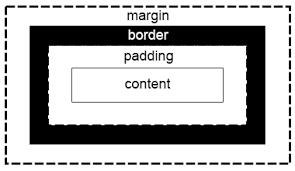

FlexBox
Modelo de diseño CSS3 que los elementos adaptables dentro de un contenedor se organicen automáticamente dependiendo del tamaño de la pantalla o del dispositivo. El elemento padre que sostiene todos los elementos flex a través de dos ejes se le conoce como Flex Container y cualquier elemento hijo directo que se mantenga directo del contenedor flex se considera un Flex Ítem. información sacada de: Castro González, J. (2020). Aplicación web para la evaluación y planificación de menús escolares.
Los servicios de IPTV están disponibles en muchos sabores. Existen dos tendencias principales: las plataformas verticales de IPTV en Internet con acceso libre de usuarios y las plataformas estándar que pertenecen a sistemas cerrados (los usuarios deben contratar el acceso). Las diferencias e incompatibilidades sustanciales entre los distintos tipos de plataformas han provocado la aparición de una plétora de diferentes tecnologías y sistemas de usuario que requieren que los usuarios no profesionales manejen diferentes dispositivos y dificultan el intercambio entre proveedores. Este trabajo aborda el problema de tratar con plataformas verticales proporcionando una arquitectura STB autoconfigurable horizontal flexible. Según Sánchez, I. B., Díaz-Sánchez, D., & Organero, M. M. (2012, September).

Conceptos Basicos CSS
En este parte estudiaremos los conceptos CSS para cuadros y sus propiedades, cuadros modelos y los parentescos entrecuatros "Schulz, R. G. (2008). Diseño web con CSS. Marcombo." Listas y enlaces
"Son listas que tienen más de un enlace. Cada enlace recorre la lista en un orden: Doblemente enlazadas: el criterio de ambos enlaces es el mismo. Múltiples enlaces: el criterio de orden es distinto para cada enlace y por lo tanto la lista puede recorrerse teniendo en cuenta cada uno de los criterios" texto tomado de: González, A. H. (2013). Listas dobles y listas múltiples.